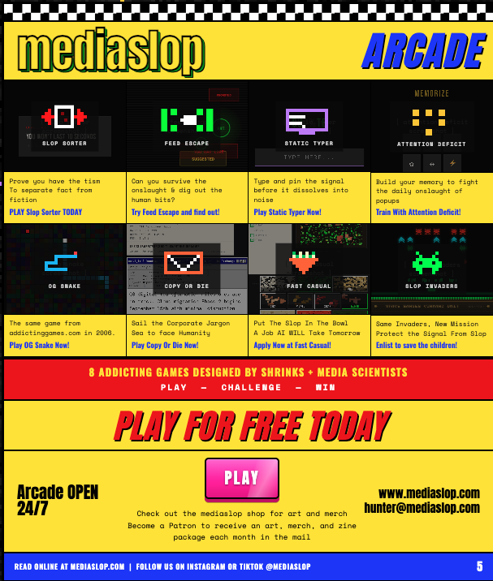

Improving narrative agency in an internet of slop
mediaslop is a media lab and arcade exploring how the things we watch, play, and share shape our understanding of the world. Through games, writing, and creative experiments, I explore narrative agency: how people question, create, and change the stories circulating around them. Play something weird, tell me what you think, and help me figure out what to make next.
Addicting arcade games to fight brain rot with brain rot
Eight free browser games turn attention and online media into playable challenges. Separate fact from fiction in Slop Sorter, escape the feed in Feed Escape, or face corporate jargon in Copy or Die. Click to explore the arcade and play.
Slop Weekly Digests
Hey, I hope you're doing well.
mediaslop weekly digests are hot off the press!
Get personal emails from Hunter with games to play, curious things to read, and a look inside the projects taking shape at mediaslop. Hit reply to share what caught your attention.
Your slop digest may contain
Games, experiments, and unexpected media. A past digest introduced the MEDIASLOP MAILER PROGRAM: personalized slop drop packages with 35 mm slides, Y2K candies, vintage baseball cards, and handwritten notes. The next project might start on a screen and end up in your mailbox.
Want to see what we're making next? Join the digest below.
Explore more games, writing, and creative work at mediaslop.com.